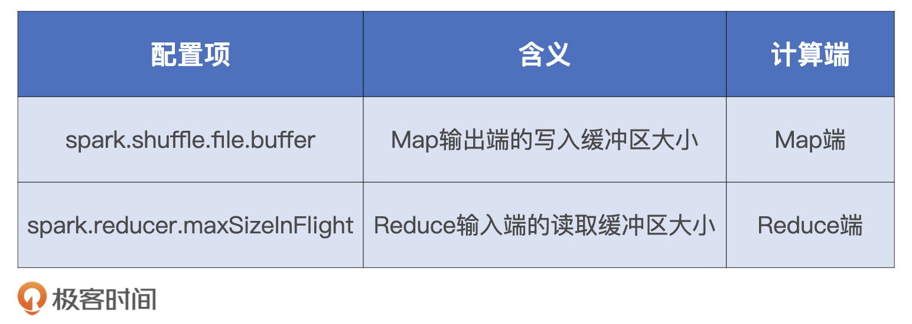
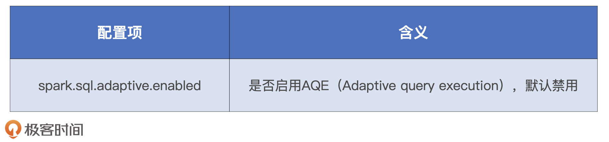
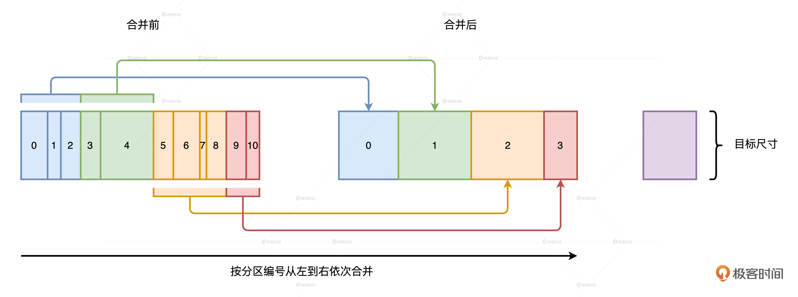
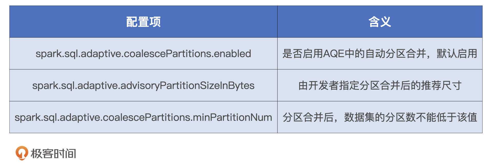
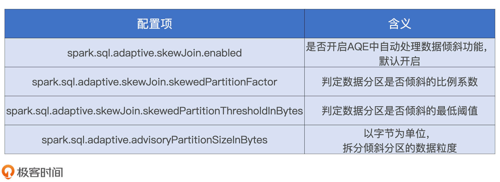

- 00 开篇词 Spark性能调优，你该掌握这些“套路”.md.html
- 01 性能调优的必要性：Spark本身就很快，为啥还需要我调优？.md.html
- 02 性能调优的本质：调优的手段五花八门，该从哪里入手？.md.html
- 03 RDD：为什么你必须要理解弹性分布式数据集？.md.html
- 04 DAG与流水线：到底啥叫“内存计算”？.md.html
- 05 调度系统：“数据不动代码动”到底是什么意思？.md.html
- 06 存储系统：空间换时间，还是时间换空间？.md.html
- 07 内存管理基础：Spark如何高效利用有限的内存空间？.md.html
- 08 应用开发三原则：如何拓展自己的开发边界？.md.html
- 09 调优一筹莫展，配置项速查手册让你事半功倍！（上）.md.html
- 10 调优一筹莫展，配置项速查手册让你事半功倍！（下）.md.html
- 11 为什么说Shuffle是一时无两的性能杀手？.md.html
- 12 广播变量（一）：克制Shuffle，如何一招制胜！.md.html
- 13 广播变量（二）：如何让Spark SQL选择Broadcast Joins？.md.html
- 14 CPU视角：如何高效地利用CPU？.md.html
- 15 内存视角（一）：如何最大化内存的使用效率？.md.html
- 16 内存视角（二）：如何有效避免Cache滥用？.md.html
- 17 内存视角（三）：OOM都是谁的锅？怎么破？.md.html
- 18 磁盘视角：如果内存无限大，磁盘还有用武之地吗？.md.html
- 19 网络视角：如何有效降低网络开销？.md.html
- 20 RDD和DataFrame：既生瑜，何生亮？.md.html
- 21 Catalyst逻辑计划：你的SQL语句是怎么被优化的？（上）.md.html
- 22 Catalyst物理计划：你的SQL语句是怎么被优化的（下）？.md.html
- 23 钨丝计划：Tungsten给开发者带来了哪些福报？.md.html
- 24 Spark 3.0（一）：AQE的3个特性怎么才能用好？.md.html
- 25 Spark 3.0（二）：DPP特性该怎么用？.md.html
- 26 Join Hints指南：不同场景下，如何选择Join策略？.md.html
- 27 大表Join小表：广播变量容不下小表怎么办？.md.html
- 28 大表Join大表（一）：什么是“分而治之”的调优思路？.md.html
- 29 大表Join大表（二）：什么是负隅顽抗的调优思路？.md.html
- 30 应用开发：北京市小客车（汽油车）摇号趋势分析.md.html
- 31 性能调优：手把手带你提升应用的执行性能.md.html
- Spark UI（上）深入解读Spark作业的“体检报告”.md.html
- Spark UI（下）：深入解读Spark作业的“体检报告”.md.html
- 期末考试 “Spark性能调优”100分试卷等你来挑战！.md.html
- 结束语 在时间面前，做一个笃定学习的人.md.html
- 捐赠
10 调优一筹莫展，配置项速查手册让你事半功倍！（下）
你好，我是吴磊。
上一讲，我们讲了硬件资源类的配置项。这一讲，我们继续说说Shuffle类和Spark SQL大类都有哪些配置项，它们的含义和作用，以及它们能解决的问题。同时，和上一讲一样，我们今天讲到的配置项也全部会围绕Executors展开。
Shuffle类配置项
首先，我们来说说Shuffle类。纵观Spark官网的Configuration页面，你会发现能调节Shuffle执行性能的配置项真是寥寥无几。其实这也很好理解，因为一旦Shuffle成为应用中不可或缺的一环，想要优化Shuffle本身的性能，我们能做的微乎其微。
不过，我们也不是完全束手无策。我们知道，Shuffle的计算过程分为Map和Reduce这两个阶段。其中，Map阶段执行映射逻辑，并按照Reducer的分区规则，将中间数据写入到本地磁盘；Reduce阶段从各个节点下载数据分片，并根据需要实现聚合计算。
那么，我们就可以通过spark.shuffle.file.buffer和spark.reducer.maxSizeInFlight这两个配置项，来分别调节Map阶段和Reduce阶段读写缓冲区的大小。具体该怎么做呢？我们一一来看。

首先，在Map阶段，计算结果会以中间文件的形式被写入到磁盘文件系统。同时，为了避免频繁的I/O操作，Spark会把中间文件存储到写缓冲区（Write Buffer）。这个时候，我们可以通过设置spark.shuffle.file.buffer来扩大写缓冲区的大小，缓冲区越大，能够缓存的落盘数据越多，Spark需要刷盘的次数就越少，I/O效率也就能得到整体的提升。
其次，在Reduce阶段，因为Spark会通过网络从不同节点的磁盘中拉取中间文件，它们又会以数据块的形式暂存到计算节点的读缓冲区（Read Buffer）。缓冲区越大，可以暂存的数据块越多，在数据总量不变的情况下，拉取数据所需的网络请求次数越少，单次请求的网络吞吐越高，网络I/O的效率也就越高。这个时候，我们就可以通过spark.reducer.maxSizeInFlight配置项控制Reduce端缓冲区大小，来调节Shuffle过程中的网络负载。
事实上，对Shuffle计算过程的优化牵扯到了全部的硬件资源，包括CPU、内存、磁盘和网络。因此，我们上一讲汇总的关于CPU、内存和硬盘的配置项，也同样可以作用在Map和Reduce阶段的内存计算过程上。
除此之外，Spark还提供了一个叫做spark.shuffle.sort.bypassMergeThreshold的配置项，去处理一种特殊的Shuffle场景。
自1.6版本之后，Spark统一采用Sort shuffle manager来管理Shuffle操作，在Sort shuffle manager的管理机制下，无论计算结果本身是否需要排序，Shuffle计算过程在Map阶段和Reduce阶段都会引入排序操作。
这样的实现机制对于repartition、groupBy这些操作就不太公平了，这两个算子一个是对原始数据集重新划分分区，另一个是对数据集进行分组，压根儿就没有排序的需求。所以，Sort shuffle manager实现机制引入的排序步骤反而变成了一种额外的计算开销。
因此，在不需要聚合，也不需要排序的计算场景中，我们就可以通过设置spark.shuffle.sort.bypassMergeThreshold的参数，来改变Reduce端的并行度（默认值是200）。当Reduce端的分区数小于这个设置值的时候，我们就能避免Shuffle在计算过程引入排序。
Spark SQL大类配置项
接下来，我们再来说说Spark SQL的相关配置项。在官网的Configuration页面中，Spark SQL下面的配置项还是蛮多的，其中对执行性能贡献最大的，当属AQE（Adaptive query execution，自适应查询引擎）引入的那3个特性了，也就是自动分区合并、自动数据倾斜处理和Join策略调整。因此，关于Spark SQL的配置项，咱们围绕着这3个特性去汇总。
首先我们要知道，AQE功能默认是禁用的，想要使用这些特性，我们需要先通过配置项spark.sql.adaptive.enabled来开启AQE，具体的操作如下：

因为这3个特性的原理我们在开发原则那一讲说过，这里我会先带你简单回顾一下，然后我们重点来讲，这些环节对应的配置项有哪些。
哪些配置项与自动分区合并有关？
分区合并的场景用一句概括就是，在Shuffle过程中，因为数据分布不均衡，导致Reduce阶段存在大量的小分区，这些小分区的数据量非常小，调度成本很高。
那么问题来了，AQE是如何判断某个分区是不是足够小，到底需不需要合并的呢？另外，既然是对多个分区进行合并，自然就存在一个收敛条件的问题，如果一直不停地合并下去，整个分布式数据集最终就会合并为一个超级大的分区。简单来说，就是：“分区合并从哪里开始，又到哪里结束呢？”

我们一起来看一下AQE分区合并的工作原理。如上图所示，对于所有的数据分区，无论大小，AQE按照分区编号从左到右进行扫描，边扫描边记录分区尺寸，当相邻分区的尺寸之和大于“目标尺寸”时，AQE就把这些扫描过的分区进行合并。然后，继续向右扫描，并采用同样的算法，按照目标尺寸合并剩余分区，直到所有分区都处理完毕。
总的来说就是，AQE事先并不判断哪些分区足够小，而是按照分区编号进行扫描，当扫描量超过“目标尺寸”时，就合并一次。我们发现，这个过程中的关键就是“目标尺寸”的确定，它的大小决定了合并之后分布式数据集的分散程度。
那么，“目标尺寸”由什么来决定的呢？Spark提供了两个配置项来共同决定分区合并的“目标尺寸”，它们分别是spark.sql.adaptive.advisoryPartitionSizeInBytes和spark.sql.adaptive.coalescePartitions.minPartitionNum。

其中，第一个参数advisoryPartitionSizeInBytes是开发者建议的目标尺寸，第二个参数minPartitionNum的含义是合并之后的最小分区数，假设它是200，就说明合并之后的分区数量不能小于200。这个参数的目的就是避免并行度过低导致CPU资源利用不充分。
结合Shuffle后的数据集尺寸和最小分区数限制，我们可以反推出来每个分区的平均大小，咱们暂且把它记为#partitionSize。分区合并的目标尺寸取advisoryPartitionSizeInBytes与#partitionSize之间的最小值。
这么说比较抽象，我们来举个例子。假设，Shuffle过后数据大小为20GB，minPartitionNum设置为200，反推过来，每个分区的尺寸就是20GB / 200 = 100MB。再假设，advisoryPartitionSizeInBytes设置为200MB，最终的目标分区尺寸就是取（100MB，200MB）之间的最小值，也就是100MB。因此你看，并不是你指定了advisoryPartitionSizeInBytes是多少，Spark就会完全尊重你的意见，我们还要考虑minPartitionNum的设置。
哪些配置项与自动数据倾斜处理有关？
再来说说数据倾斜，在数据关联（Data Joins）的场景中，当AQE检测到倾斜的数据分区时，会自动进行拆分操作，把大分区拆成多个小分区，从而避免单个任务的数据处理量过大。不过，Spark 3.0版本发布的AQE，暂时只能在Sort Merge Join中自动处理数据倾斜，其他的Join实现方式如Shuffle Join还有待支持。
那么，AQE如何判定数据分区是否倾斜呢？它又是怎么把大分区拆分成多个小分区的？

首先，分区尺寸必须要大于spark.sql.adaptive.skewJoin.skewedPartitionThresholdInBytes参数的设定值，才有可能被判定为倾斜分区。然后，AQE统计所有数据分区大小并排序，取中位数作为放大基数，尺寸大于中位数一定倍数的分区会被判定为倾斜分区，中位数的放大倍数也是由参数spark.sql.adaptive.skewJoin.skewedPartitionFactor控制。
接下来，我们还是通过一个例子来理解。假设数据表A有3个分区，分区大小分别是80MB、100MB和512MB。显然，这些分区按大小个排序后的中位数是100MB，因为skewedPartitionFactor的默认值是5倍，所以大于100MB * 5 = 500MB的分区才有可能被判定为倾斜分区。在我们的例子中，只有最后一个尺寸是512MB的分区符合这个条件。
这个时候，Spark还不能完全判定它就是倾斜分区，还要看skewedPartitionThresholdInBytes配置项，这个参数的默认值是256MB。对于那些满足中位数条件的分区，必须要大于256MB，Spark才会把这个分区最终判定为倾斜分区。假设skewedPartitionThresholdInBytes设定为1GB，那在我们的例子中，512MB那个大分区，Spark也不会把它看成是倾斜分区，自然也就不能享受到AQE对于数据倾斜的优化处理。
检测到倾斜分区之后，接下来就是对它拆分，拆分的时候还会用到advisoryPartitionSizeInBytes参数。假设我们将这个参数的值设置为256MB，那么，刚刚那个512MB的倾斜分区会以256MB为粒度拆分成多份，因此，这个大分区会被拆成 2 个小分区（ 512MB / 256MB =2）。拆分之后，原来的数据表就由3个分区变成了4个分区，每个分区的尺寸都不大于256MB。
哪些配置项与Join策略调整有关？
最后，咱们再来说说数据关联（Joins）。数据关联可以说是数据分析领域中最常见的操作，Spark SQL中的Join策略调整，它实际上指的是，把会引入Shuffle的Join方式，如Hash Join、Sort Merge Join，“降级”（Demote）为Broadcast Join。
Broadcast Join的精髓在于“以小博大”，它以广播的方式将小表的全量数据分发到集群中所有的Executors，大表的数据不需要以Join keys为基准去Shuffle，就可以与小表数据原地进行关联操作。Broadcast Join以小表的广播开销为杠杆，博取了因消除大表Shuffle而带来的巨大性能收益。可以说，Broadcast Join把“杠杆原理”应用到了极致。
在Spark发布AQE之前，开发者可以利用spark.sql.autoBroadcastJoinThreshold配置项对数据关联操作进行主动降级。这个参数的默认值是10MB，参与Join的两张表中只要有一张数据表的尺寸小于10MB，二者的关联操作就可以降级为Broadcast Join。为了充分利用Broadcast Join“以小博大”的优势，你可以考虑把这个参数值调大一些，2GB左右往往是个不错的选择。
不过，autoBroadcastJoinThreshold这个参数虽然好用，但是有两个让人头疼的短板。
一是可靠性较差。尽管开发者明确设置了广播阈值，而且小表数据量在阈值以内，但Spark对小表尺寸的误判时有发生，导致Broadcast Join降级失败。
二来，预先设置广播阈值是一种静态的优化机制，它没有办法在运行时动态对数据关联进行降级调整。一个典型的例子是，两张大表在逻辑优化阶段都不满足广播阈值，此时Spark SQL在物理计划阶段会选择Shuffle Joins。但在运行时期间，其中一张表在Filter操作之后，有可能出现剩余的数据量足够小，小到刚好可以降级为Broadcast Join。在这种情况下，静态优化机制就是无能为力的。
AQE很好地解决了这两个头疼的问题。首先，AQE的Join策略调整是一种动态优化机制，对于刚才的两张大表，AQE会在数据表完成过滤操作之后动态计算剩余数据量，当数据量满足广播条件时，AQE会重新调整逻辑执行计划，在新的逻辑计划中把Shuffle Joins降级为Broadcast Join。再者，运行时的数据量估算要比编译时准确得多，因此AQE的动态Join策略调整相比静态优化会更可靠、更稳定。
不过，启用动态Join策略调整还有个前提，也就是要满足nonEmptyPartitionRatioForBroadcastJoin参数的限制。这个参数的默认值是0.2，大表过滤之后，非空的数据分区占比要小于0.2，才能成功触发Broadcast Join降级。
这么说有点绕，我们来举个例子。假设，大表过滤之前有100个分区，Filter操作之后，有85个分区内的数据因为不满足过滤条件，在过滤之后都变成了没有任何数据的空分区，另外的15个分区还保留着满足过滤条件的数据。这样一来，这张大表过滤之后的非空分区占比是 15 / 100 = 15%，因为15%小于0.2，所以这个例子中的大表会成功触发Broadcast Join降级。
相反，如果大表过滤之后，非空分区占比大于0.2，那么剩余数据量再小，AQE也不会把Shuffle Joins降级为Broadcast Join。因此，如果你想要充分利用Broadcast Join的优势，可以考虑把这个参数适当调高。
小结
今天这一讲，我们深入探讨了Shuffle类和Spark SQL大类两类配置项，以及每个配置项可以解决的问题。
对于Shuffle类我们要知道，在Shuffle过程中，对于不需要排序和聚合的操作，我们可以通过控制spark.shuffle.sort.bypassMergeThreshold参数，来避免Shuffle执行过程中引入的排序环节，从而避免没必要的计算开销。
对于Spark SQL大类我们首先要知道，AQE默认是禁用状态，要充分利用AQE提供的3个特性，就是自动分区合并、数据倾斜处理和Join策略调整，我们需要把spark.sql.adaptive.enabled置为true。
除此之外，AQE的3个特性各自都有相对应的配置项，需要我们单独调整。
AQE中的自动分区合并过程与我们预想的不太一样。QE事先并不判断哪些分区足够小，而是按照分区编号进行扫描，当扫描量超过“目标尺寸”时就合并一次。目标尺寸由advisoryPartitionSizeInBytes和coalescePartitions.minPartitionNum两个参数共同决定。
AQE能够自动处理Sort Merge Join场景中的数据倾斜问题。首先根据所有分区大小的中位数，以及放大倍数skewedPartitionFactor来检测倾斜分区，然后以advisoryPartitionSizeInBytes为粒度对倾斜分区进行拆分。
AQE动态Join策略调整可以在运行时将Shuffle Joins降级为Broadcast Join，同时，运行时的数据量估算要比编译时准确得多，因此相比静态优化会更可靠。不过，需要我们注意的是，Shuffle过后非空分区占比要小于nonEmptyPartitionRatioForBroadcastJoin才能触发Broadcast Join的降级优化。
好啦，经过这两讲的学习，我们一起汇总出了Spark中与性能调优息息相关的所有配置项，为了方便你快速查阅，我把它们合并在了一张文稿的表格中，希望你能在工作中好好利用起来。

每日一练
- AQE的分区合并算法略显简单粗暴，如果让你来重新实现分区合并特性的话，你都有哪些思路呢？
- AQE中数据倾斜的处理机制，你认为有哪些潜在的隐患？
期待在留言区看到你的思考和答案，也欢迎你把这份调优手册分享给你的朋友们，我们下一讲见！
© 2019 - 2023 Liangliang Lee. Powered by gin and hexo-theme-book.